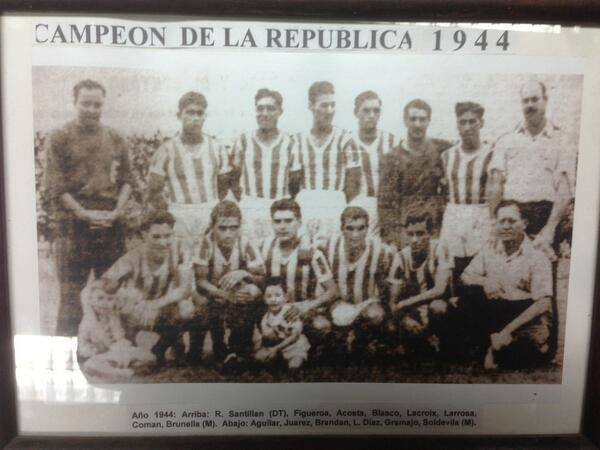
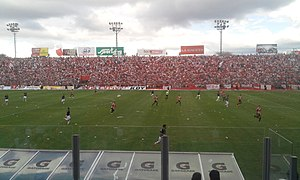

Copa republica edicion 1944
El 4 de marzo de 1945 San Martín se consagró campeón de la Copa de la República 1944,6tras vencer a Boca Juniors en cuartos de final, a Sarmiento (Resistencia) en semifinales, y a Newell's Old Boys en la final, por 3 a 1. El partido se jugó en el estadio Monumental José Fierro, propiedad de Atlético, con 18 000 espectadores presenciando el encuentro, en un recinto que en esos años tenía capacidad para 12 000 personas. San Martín, entre 45 clubes, logró clasificar en la dura primera ronda, donde goleó a Ñuñorco por 5 a 0 en Monteros y a Atlético Concepción por 4 a 0. Pasó a cuartos de final, donde empató 2 a 2 con Boca Juniors, que tenía figuras como Mario Boyé, luego de ir perdiendo 2 a 0. San Martín logró pasar a semifinales por mayor diferencia de tiros de esquina (11 a 9), y en semifinales se enfrentó con Sarmiento de Resistencia, de visitante. El partido terminó 1 a 1 y volvió a pasar por mayor diferencia de tiros de esquina (12 a 11), con lo que llegó a la gran final, en el estadio del clásico rival. San Martín le ganó por 3 goles contra 1 a Newell's Old Boys y logró dar la vuelta olímpica. La copa duró aproximadamente un año, disputada en simultáneo con los torneos regulares. Con ese logro, San Martín es, junto a Newell's Old Boys y Club Atlético Rosario Central, los tres únicos equipos del interior que conquistaron un título de AFA (sin contar torneos de ascenso). En este caso, una de las copas nacionales del fútbol argentino.

El ascenso en La Ciudadela y el retorno a la Primera División

"Temporada 2017-18"
Con la llegada de Roberto Sagra a la presidencia de San Martín y las incorporaciones de Ignacio Arce, Cristian Correa, Diego Martínez, Esteban Espíndola, el Paraguayo Ismael Benegas, Lucas Acevedo, Maximiliano Martínez, Alejandro Altuna, Damián Arce, Gabriel Graciani, Lucas Bossio, Walter Busse, Ivo Chavés, Sebastián Prediger, Claudio Bieler, Franco Costa, Nicolás Benegas y Sergio González, San Martín se armó con todo para repetir lo de la temporada 2007-2008 que es el retorno a la máxima categoría. En la primera rueda terminó 7° con 20 puntos por lo que se clasificó a Copa Argentina pero Diego Cagna dejó de dirigir sorpresivamente al cuadro santo dado que le ofrecieron la dirección técnica en el fútbol colombiano, más precisamente en el Atlético Bucaramanga. Tras la salida de Diego Cagna, se hizo cargo de la conducción técnica para la segunda etapa de la B Nacional Rubén Forestello, con el que el equipo estuvo a punto de salir campeón de la Primera B Nacional, sin embargo perdió frente a Brown en Adrogué por 1-0 en la última fecha y perdió dicha posibilidad, mientras que Almagro y Aldosivi igualaron la primera posición y tuvieron que ir a un partido desempate, el cual se jugó en Sarandí. Finalmente este título quedó en manos de Aldosivi de Mar del Plata, tras derrotar al cuadro tricolor por 3-1 en el estadio de Arsenal. Tras lograr el tercer puesto en dicho torneo pudo jugar el torneo reducido en el cual empató 3 a 3 de manera increíble contra Villa Dálmine en cuartos de final, ya que terminó el segundo tiempo perdiendo 2 a 0, en el segundo tiempo con gol del ingresado Franco Costa, descontó el partido y Claudio Bieler puso el empate de cabeza. un minuto después los violetas se pusieron nuevamente arriba y, sobre el final, Juan Galeano puso el empate agónico, a los 48 minutos del segundo tiempo, en una jugada en la que la visita se salvaba de milagro tras una increíble atajada de Martín Perafán y un rechazo sobre la línea del arco. De este modo, el cuadro santo clasificó debido a la ventaja deportiva. En semifinales debió enfrentarse a Agropecuario de Carlos Casares, que dio la sorpresa tras eliminar contra todos los pronósticos en cuartos de final a Almagro, el subcampeón del torneo, de visitante en José Ingenieros por 2-0. El cuadro santo prevaleció ganando en casa por 3-0 en el partido de vuelta, tras empatar sin goles en el estadio Ofelia Rosenzuaig y así llegó a la final del torneo en la cual debió enfrentarse a Sarmiento de Junín. El equipo juninense venía de eliminar a Instituto de Córdoba en cuartos de final, y a Brown de Adrogué, la gran revelación del torneo, en semifinales. En el partido de ida disputado en Junín el verde se impuso por 1-0, con gol de Nicolás Miracco desde los doce pasos. Sin embargo en el partido de vuelta jugado en Tucumán, el equipo santo arrasó a su rival por 5-1. Fue tanta la superioridad exhibida por el cuadro tucumano, al grado de que en 3 minutos del primer tiempo, San Martín ya estaba arriba por 2-0 con los goles de Lucas Acevedo y Gonzalo Rodríguez. Luego en el segundo tiempo San Martín liquidó el partido con dos goles del Taca Claudio Bieler, uno de ellos de tiro libre, y el restante de Acevedo. Nahuel Estévez descontó sobre el final para el Verde pero ese gol ya no servía para nada. Esta es la segunda consagración que logra el equipo tucumano en su estadio, la última había sido en el Torneo Argentino B 2004-2005 en donde había derrotado a Sportivo Patria de Formosa. Tras 9 años San Martín volvió a jugar en la Superliga Argentina de Fútbol. Se destacaron Claudio Bieler, Gonzalo Rodríguez, Juan Galeano, Ismael Benegas y Matías García.